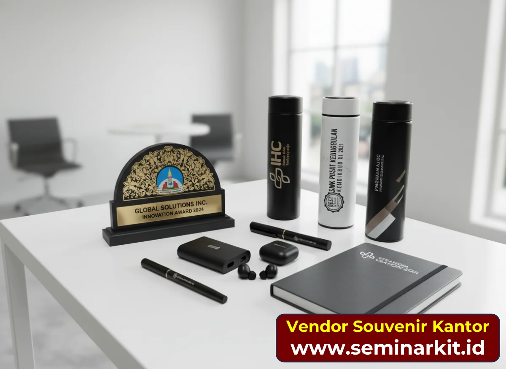
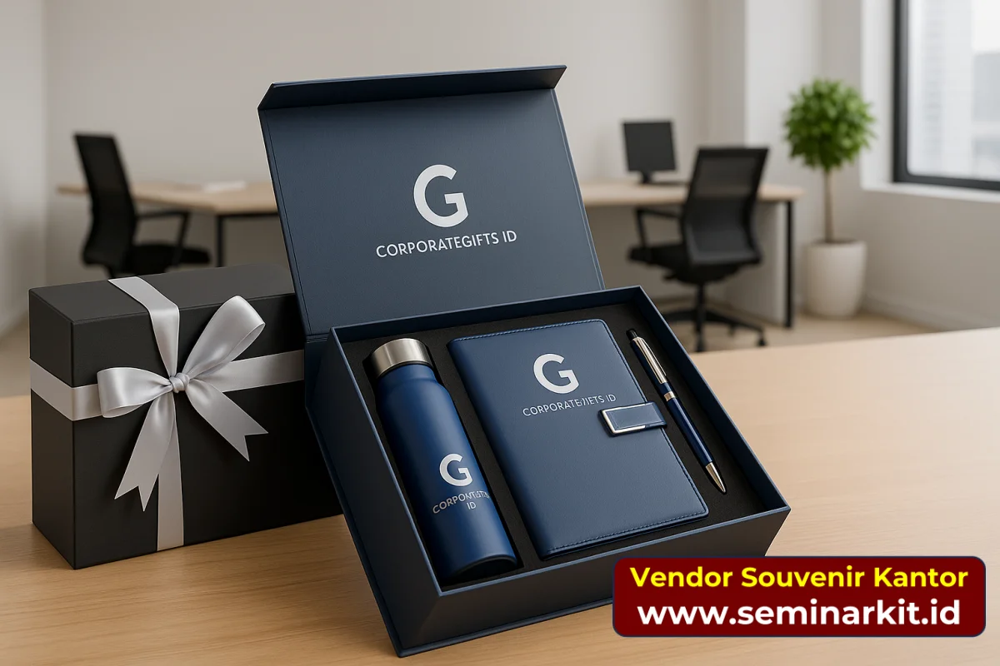

Artikel ini adalah panduan pendukung dari halaman utama Panduan Memilih Vendor Souvenir Kantor untuk Perusahaan. Fokus tulisan ini lebih teknis: checklist audit vendor, metode skoring, dan red flag yang harus jadi alarm bagi tim purchasing sebelum menandatangani PO.
Dalam praktik sehari-hari, kesalahan memilih vendor tidak hanya berdampak ke kualitas barang. Dampaknya merambat ke timeline event, reputasi internal tim, sampai biaya tak terduga di akhir project. Karena itu, audit vendor sebaiknya diperlakukan sebagai proses manajemen risiko, bukan sekadar formalitas administrasi.
Mengapa Audit Vendor Souvenir Kantor Wajib Dilakukan?
Pengadaan souvenir kantor sering terlihat sederhana, padahal titik gagal terbesar justru ada di pemilihan vendor. Audit membantu tim menurunkan risiko yang umum terjadi: kualitas produk tidak konsisten, keterlambatan produksi, masalah distribusi multi alamat, hingga biaya tersembunyi.
Dengan audit yang sistematis, Anda bisa menjaga keputusan tetap objektif. Vendor dinilai berdasarkan data dan bukti kerja, bukan kesan personal, promosi harga awal, atau janji verbal yang sulit ditagih di tahap eksekusi.
Semakin besar skala project, semakin penting audit vendor dilakukan sebelum approval final.
Tahap 1: Definisikan Kebutuhan Internal Sebelum Menghubungi Vendor
Kesalahan paling sering adalah meminta penawaran saat kebutuhan internal belum final. Akibatnya, vendor mengirim quotation dengan asumsi yang berbeda-beda dan tim sulit membandingkan secara adil.
Pastikan lima komponen ini sudah jelas di internal: jenis produk, estimasi qty, deadline barang diterima, budget target, dan skema pengiriman (single drop atau multi drop). Lengkapi dengan kebutuhan branding seperti file logo, warna brand, serta batasan desain dari tim marketing.
Jika brief belum matang, mulai dari template standar terlebih dulu agar vendor memahami konteks project Anda sejak awal.
Rujukan praktis: gunakan Template Brief Pengadaan Souvenir Kantor agar permintaan penawaran lebih cepat dan minim revisi.

Tahap 2: Sourcing Kandidat Vendor yang Relevan
Mulai dari sumber yang paling kredibel: referensi internal perusahaan, vendor yang pernah dipakai divisi lain, lalu rekomendasi komunitas purchasing/GA/HR. Setelah itu baru perluas ke pencarian online dan expo industri untuk menambah opsi.
Targetkan minimal tiga kandidat vendor untuk dibandingkan. Angka ini cukup untuk membuat benchmark yang sehat tanpa memperlambat proses evaluasi terlalu lama.
Tahap 3: 10 Parameter Audit Vendor (Wajib)
Gunakan parameter berikut sebagai kerangka audit vendor:
- Portofolio relevan: ada bukti project sejenis dengan skala yang mendekati kebutuhan Anda.
- Sample dan mockup: vendor bersedia menyediakan sample fisik/mockup sebelum produksi massal.
- Kapasitas produksi: lead time jelas dan realistis untuk kuantitas yang diminta.
- Sistem quality control: ada checkpoint QC dan dokumentasi proses.
- Kemampuan custom branding: metode branding sesuai jenis produk dan kebutuhan logo.
- Distribusi multi-drop: mampu mengelola pengiriman ke banyak alamat dengan bukti kirim.
- Transparansi harga: breakdown biaya rinci, tidak hanya angka all-in.
- Referensi klien: ada referensi yang bisa dikonfirmasi.
- Respons komunikasi: respons cepat, jelas, dan substantif sejak awal.
- After-sales: ada mekanisme klaim, penggantian, atau kompensasi yang tertulis.
Tahap 4: Matriks Skoring Vendor untuk Keputusan Objektif
Setelah penawaran masuk, jangan memilih berdasarkan harga saja. Gunakan matriks skoring untuk menilai kandidat secara konsisten.
| Kriteria | Bobot | Vendor A | Vendor B | Vendor C |
|---|---|---|---|---|
| Kualitas portofolio | 20% | — | — | — |
| Lead time | 15% | — | — | — |
| Harga (kompetitif) | 20% | — | — | — |
| Kemampuan QC | 15% | — | — | — |
| Distribusi multi-drop | 10% | — | — | — |
| Respons komunikasi | 10% | — | — | — |
| Referensi klien | 10% | — | — | — |
Total skor dihitung dari nilai x bobot. Vendor dengan skor tertinggi biasanya paling aman untuk eksekusi, meskipun bukan yang paling murah.

Tahap 5: Red Flag Vendor yang Harus Dihindari
Hentikan negosiasi jika vendor menunjukkan salah satu tanda berikut:
- Tidak bisa menunjukkan portofolio project nyata yang relevan.
- Meminta pelunasan 100% sebelum produksi dimulai tanpa jaminan yang jelas.
- Menolak memberikan sample atau mockup sebelum produksi massal.
- Tidak bersedia menjelaskan breakdown biaya per komponen.
- Jawaban teknis tidak konsisten saat ditanya material, metode branding, atau QC.
- Tidak memiliki dokumen formal seperti penawaran detail, PO, atau kesepakatan tertulis.

Banner promosi: klik gambar untuk langsung terhubung ke WhatsApp tim sales.
Tahap 6: Strategi Kolaborasi Jangka Panjang dengan Vendor Terpilih
Jika project pertama berjalan baik, ubah hubungan vendor dari transaksi satu kali menjadi kemitraan operasional. Berikan feedback tertulis, susun SLA untuk repeat order, dan informasikan pipeline project agar vendor bisa menyiapkan kapasitas produksi lebih awal.
Pendekatan ini biasanya menghasilkan tiga keuntungan: harga lebih stabil, kualitas lebih konsisten, dan proses approval lebih cepat karena standar kerja sudah disepakati bersama.
Checklist Final Audit Vendor
- ✓ Kebutuhan produk, qty, budget, dan deadline sudah terdefinisi.
- ✓ Minimal tiga kandidat vendor sudah dibandingkan.
- ✓ Penawaran sudah dibandingkan berbasis breakdown biaya.
- ✓ Sample/mockup sudah diverifikasi sebelum produksi massal.
- ✓ Red flag utama tidak ditemukan pada vendor terpilih.
- ✓ Dokumen PO/kontrak sudah memuat spesifikasi, timeline, dan term pembayaran.
Kesimpulan
Artikel ini melengkapi panduan vendor utama dengan alat eksekusi yang lebih praktis: parameter audit, matriks skoring, dan red flag. Dengan pendekatan ini, tim purchasing dapat mengambil keputusan yang lebih defensible di depan manajemen sekaligus lebih aman saat project berjalan.
Jika Anda sedang menyiapkan pengadaan souvenir dalam waktu dekat, gunakan checklist ini sebagai quality gate sebelum approval vendor final.
Baca juga:
- Panduan Memilih Vendor Souvenir Kantor untuk Perusahaan
- Perbedaan Merchandise, Corporate Gift, dan Hampers
- Checklist Seminar Kit untuk Event Korporat
- Panduan Hampers Perusahaan: Produk, Budget & Distribusi
FAQ Seputar Audit Vendor Souvenir Kantor
Apa perbedaan artikel ini dengan panduan memilih vendor souvenir kantor utama?
Artikel ini berfungsi sebagai pendukung dengan fokus audit teknis: skoring vendor, red flag pengadaan, dan checklist keputusan sebelum approval final.
Berapa jumlah vendor yang ideal untuk dibandingkan sebelum memilih?
Minimal tiga vendor agar tim punya pembanding yang cukup pada aspek harga, kualitas, lead time, dan layanan distribusi.
Apakah vendor termurah selalu menjadi pilihan terbaik?
Tidak selalu. Vendor terbaik adalah yang memberikan total risiko paling rendah dan hasil paling konsisten, bukan sekadar harga awal paling rendah.
Kapan tim harus menghentikan negosiasi dengan vendor?
Saat muncul red flag utama seperti tidak ada sample, tidak transparan biaya, atau tidak ada dokumen formal yang bisa dijadikan dasar kontrol.